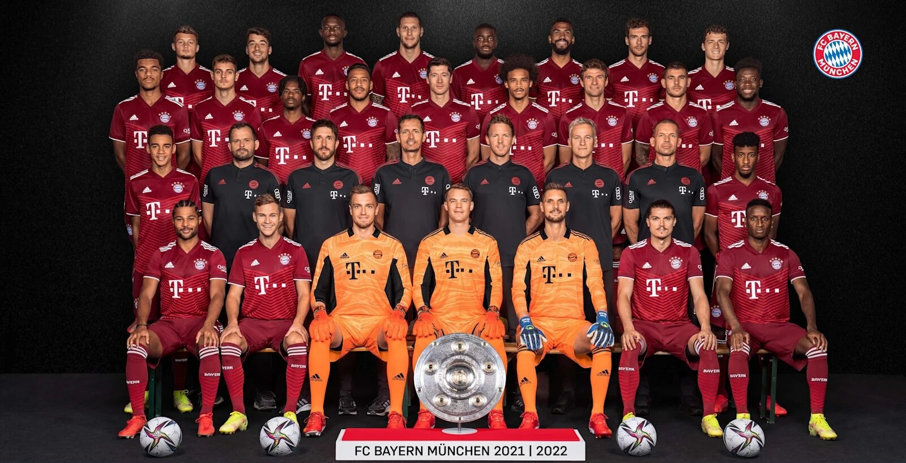

My favorite team is Bayern Munich. They are a German team based in Munich, Germany, founded on
February 27th, 1900 by 11 football players, led by Franz John. It is the most successful professional
club in German football history, having won a record 31 national titles, 20 national cups, along with
numerous European honours. Bayern had its golden period in the mid-1970s
when, under the leadership of players like captain Franz Beckenbauer, Gerd Muller or Sepp Maier, it
won the European Cup 3 consecutive times(in 1974, 1975, and 1976). Since then, the club's success
continued and it is very present today. Bayern plays its home matches at Allianz Arena,
a stadium with a capacity of 75 000 seats. The team colors are red and white, and the team badge
shows the white and blue flag of Bavaria.
Rivalries
Throughout the years, it formed some sporting rivalries with clubs from Germany and Europe. The main local
rival is 1860 Munich, who was more successful club in the 1950s and was controversially picked for the
initial Bundesliga season in 1963. More recently, it enjoys rivalries with Bayer Leverkusen,
Borussia Moenchengladbach and Borussia Dortmund, against which it contested important matches like German
Cup finals or the Champions League final in 2013. The European rivals are Real Madrid, A.C Milan and
Manchester United due to many classic wins, draws and losses. The matchup between Bayern and Real Madrid has
historically been played most often in European competitions with 24 matches. Despite the number of duels
between them, they have never met in the final of an European competition.

The players of the club for the current season
These are some of the most important players of the team:
Shirt number
Position
Name
Country
1
Goalkeeper
Manuel Neuer
Germany
6
Midfielder
Joshua Kimmich
Germany
7
Forward
Serge Gnabry
Germany
9
Forward
Robert Lewandowski
Poland
10
Forward
Leroy Sane
Germany
11
Forward
Kingsley Coman
France
19
Defender
Alphonso Davies
Canada
21
Defender
Lucas Hernandez
France
25
Forward
Thomas Mueller
Germany
42
Midfielder
Jamal Musiala
Germany
Whenever Bayern scores a goal at home, this song is played: